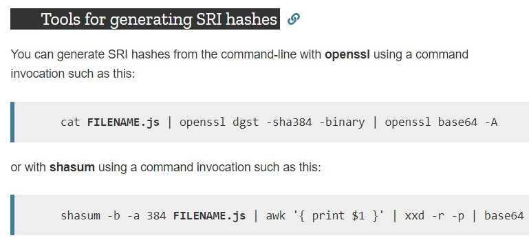
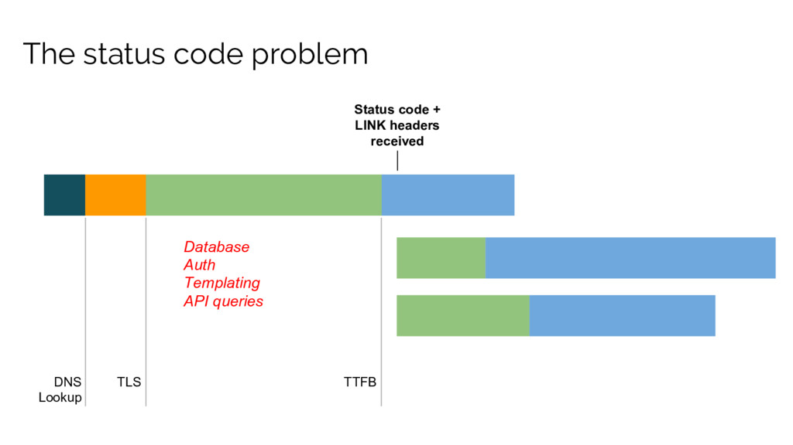

Headers
by Victor Tkachenko
Response headers
- Security
- Performance
- Hints etc
Security

Open Web Application Security Project
OWASP - это открытый проект обеспечения безопасности веб-приложений.
Udifo

X-XSS-Protection
Example
X-XSS-Protection: 1; mode=block;
X-XSS-Protection
Example
X-XSS-Protection: 1; mode=block;
When to use - always
Expect-CT (Certificate Transparency)
Example
Expect-CT: max-age=86400,enforce;Expect-CT: max-age=86400, enforce, report-uri="https://pb.ua/report";
Expect-CT (Certificate Transparency)
Example
Expect-CT: max-age=86400,enforce;Expect-CT: max-age=86400, enforce, report-uri="https://pb.ua/report";
When to use - always
X-Frame-Options
Example
X-Frame-Options: deny;X-Frame-Options: sameorigin;X-Frame-Options: allow-from https://example.com;
X-Frame-Options
Example
X-Frame-Options: deny;X-Frame-Options: sameorigin;X-Frame-Options: allow-from https://example.com;
When to use - always; third party widgets
Strict-Transport-Security
Example
Strict-Transport-Security: max-age=31536000; includeSubDomains;
Strict-Transport-Security
Example
Strict-Transport-Security: max-age=31536000; includeSubDomains;
When to use - always;
Strict-Transport-Security checker online
Content-Security-Policy (CSP)
Example
Content-Security-Policy:default-src https:; img-src * data:; frame-ancestors https://*.liqpay.ua;
Content-Security-Policy (CSP)
Example
Content-Security-Policy:default-src https:; img-src * data:; frame-ancestors https://*.liqpay.ua;
When to use - always;
Content-Security-Policy-Report-Only
Example
Content-Security-Policy-Report-Only:default-src https:; report-uri /csp-error/;
Content-Security-Policy-Report-Only
Example
Content-Security-Policy-Report-Only:default-src https:; report-uri /csp-error/;
When to use - for collecting errors related to CSP;
Referrer-Policy
Example
Referrer-Policy: no-referrer-when-downgrade;
Referrer-Policy
Example
Referrer-Policy: no-referrer-when-downgrade;
When to use - always;
From
Example
From: viktor.tkachenko@privatbank.ua;
From
Example
From: viktor.tkachenko@privatbank.ua;
When to use - for collecting referers;
Cookie
Example
Cookie: some trash; SameSite=Strict;Cookie: some trash; SameSite=Lax;Cookie: some trash; HttpOnly;Cookie: some trash; Secure;Cookie: some trash; Secure;HttpOnly
Cookie
Example
Cookie: some trash; SameSite=Strict;Cookie: some trash; SameSite=Lax;Cookie: some trash; HttpOnly;Cookie: some trash; Secure;Cookie: some trash; Secure;HttpOnly
When to use - always;
X-Content-Type-Options
Example
X-Content-Type-Options: nosniff;
X-Content-Type-Options
Example
X-Content-Type-Options: nosniff;
When to use - always
Feature-Policy
Example
Feature-Policy: vibrate 'none'; geolocation 'none';Feature-Policy: sync-script 'none'; sync-xhr 'none'; layout-animations 'none'; document-write 'none';
Feature-Policy
Example
Feature-Policy: vibrate 'none'; geolocation 'none';Feature-Policy: sync-script 'none'; sync-xhr 'none'; layout-animations 'none'; document-write 'none';
When to use - always, carefully
Feature-Policy directives
- accelerometer
- ambient-light-sensor
- autoplay
- camera
- document-write
- encrypted-media
- fullscreen
- geolocation
- gyroscope
- layout-animations
- lazyload
- legacy-image-formats
- magnetometer
- midi
- oversized-images
- payment
- picture-in-picture
- speaker
- sync-script
- sync-xhr
- unoptimized-images
- unsized-media
- usb
- vertical-scroll
- vr
Integrity
Example
Integrity: sha256-MfvZlkHCEqatNoGiOXveE8FIwMzZg4W85qfrfIFBfYc= sha512-dTfge/zgoMYpP7QbHy4gWMEGsbsdZeCXz7irItjcC3sPUFtf0kuFbDz/ixG7ArTxmDjLXDmezHubeNikyKGVyQ==;
When to use - always
SRI - Subresource Integrity
Tools for generation

Clear-Site-Data
Example
Clear-Site-Data: "cache", "cookies", "storage", "executionContexts";Clear-Site-Data: *;
Clear-Site-Data
Example
Clear-Site-Data: "cache", "cookies", "storage", "executionContexts";Clear-Site-Data: *;
When to use - https://next.privat24.ua/logout; GDPR
Performance

Content Negotiation

Vary 
Example
Vary: Accept-Encoding, Accept-Language, User-Agent, Save-Data, Referrer, DPR, Viewport-Width, Width;
Vary
Example
Vary: Accept-Encoding, Accept-Language, User-Agent, Save-Data, Referrer, DPR, Viewport-Width, Width;
When to use - using by default* but only with Accept-Encoding
Accept-Encoding
Example
Accept-Encoding: gzip, deflate, br, identity;
Accept-Encoding
Example
Accept-Encoding: gzip, deflate, br, identity;
When to use - using by default*
Accept
Example
Accept: text/html, application/xhtml+xml, application/xml; q=0.9, image/webp, image/apng, */*; q=0.8, application/signed-exchange; v=b3;
Accept
Example
Accept: text/html, application/xhtml+xml, application/xml; q=0.9, image/webp, image/apng, */*; q=0.8, application/signed-exchange; v=b3;
When to use - using by default* see documentation
Can determine browser capabilities
Accept-Language
Example
Accept-Encoding: ru-RU, ru; q=0.9, en-US;
Accept-Language
Example
Accept-Encoding: ru-RU, ru; q=0.9, en-US;
When to use - using by default*
You can predict user choice
User-Agent
Example
User-Agent: Mozilla/5.0 (Windows NT 6.1; Win64; x64; rv:47.0) Gecko/20100101 Firefox/47.0;
User-Agent
Example
User-Agent: Mozilla/5.0 (Windows NT 6.1; Win64; x64; rv:47.0) Gecko/20100101 Firefox/47.0;
When to use - different assets for different devices
You can predict user choice
WURFL

Save-Data
Example
Save-Data: 1;
Save-Data
Example
Save-Data: 1;
When to use - for avoiding enormous network payloads
You can serve different assets
Accept-CH
CH - client hints
Example
Viewport-width: 1024;Device-memory: 1;DPR: 2;Width: 2048;
Accept-CH
CH - client hints
Example
Viewport-width: 1024;Device-memory: 1;DPR: 2;Width: 2048;
When to use - different assets for different devices/dpr etc
You can predict user choice
Sec-CH-*
Variants
Example
Variants: Accept-Encoding;gzip;br, Accept-Language;en ;fr;
Variants
Example
Variants: Accept-Encoding;gzip;br, Accept-Language;en ;fr;
When to use - content negotiations
Cache-Control
- public and private
- max-age
- s-max-age
- no-store
- no-cache
- must-revalidate
- proxy-revalidate
- immutable
- stale-while-revalidate
- stale-if-error
- no-transform
- min-fresh
Cache-Control
Example
Cache-Control: public, max-age=31536000, immutable;
Cache-Control
Example
Cache-Control: public, max-age=31536000, immutable;
When to use - assets
Cache-Control
Example
Cache-Control: private, no-cache, no-store;
Cache-Control
Example
Cache-Control: private, no-cache, no-store;
When to use - user data
Alt-Svc
Example
Alt-Svc: h2="new.pb.ua:8080", h2=":3000", quic=":4200";
Link as server push, http2
Example
Link: <https://fonts.gstatic.com>; rel=preconnect; crossorigin;Link: </bootstrap.css> rel=preload; as=style; nopush;
Link as server push, http2
Example
Link: <https://fonts.gstatic.com>; rel=preconnect; crossorigin;Link: </bootstrap.css> rel=preload; as=style; nopush;
When to use - always
Possible link values
- preconnect
- preload
- prefetch
- prerender
- dns-prefetch
- alternate
- canonical
- modulepreload
Request/response timeline

Early hints (103 status code)
Example
Link: <https://fonts.gstatic.com>; rel=preconnect; crossorigin;Link: </bootstrap.css> rel=preload; as=style; nopush;
Early hints (103 status code)
Example
Link: <https://fonts.gstatic.com>; rel=preconnect; crossorigin;Link: </bootstrap.css> rel=preload; as=style; nopush;
When to use - whereas possible, always
Link preload etc in action

Service-Worker-Allowed
Example
Service-Worker-Allowed: /;Service-Worker-Allowed: /app;
Reporting API (JavaScript)
Reporting API (JavaScript)

Q
u
e
s
t
i
o
n
s